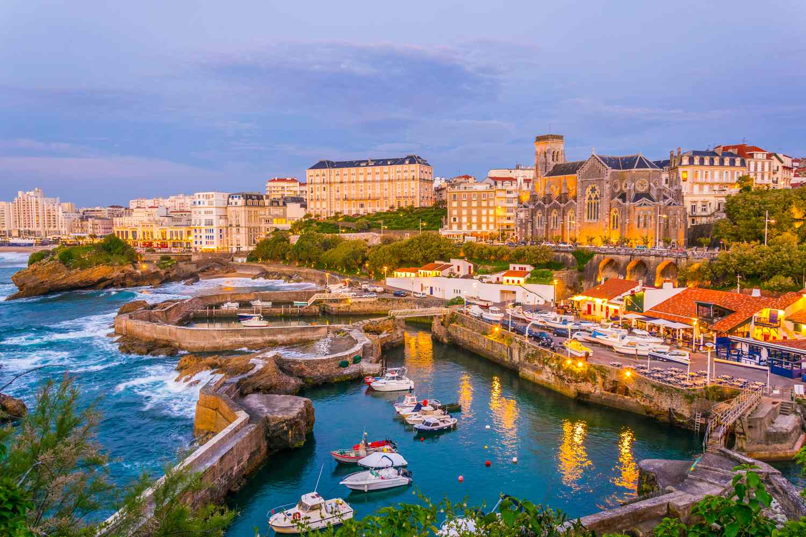
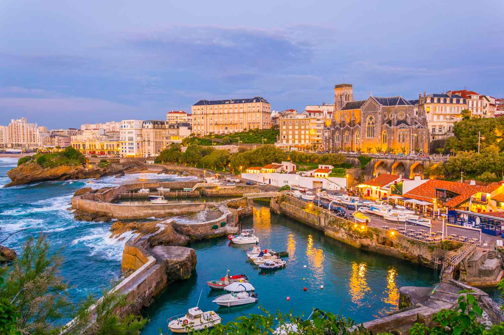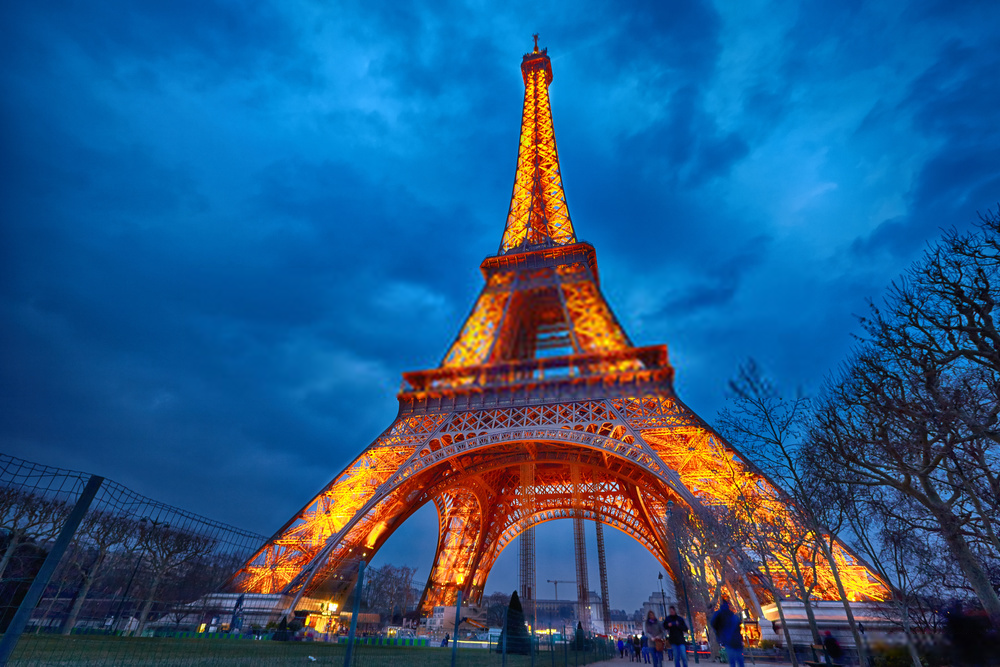 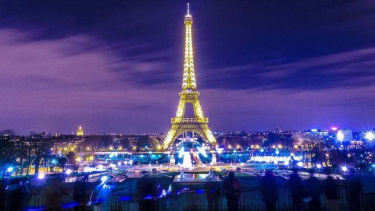
EIFFEL TOWER
Facts about Eiffel Tower
The Eiffel Tower is a feat of ingenuity as much as it is a famous landmark. This structure of 8,000 metallic parts was designed by Gustave Eiffel as a temporary exhibit for the World Fair of 1889. Originally loathed by critics, the 330-meter-high tower is now a beloved and irreplaceable fixture of the Paris skyline.
Upon the first glimpse, you'll be impressed by the tower's delicate airiness despite its monumental size. Next, the panoramas at each of the three levels will take your breath away.
You can dine with a view on the 1st floor or indulge at the Michelin-starred Le Jules Verne restaurant on the 2nd floor. At the exhilarating height of 276 meters, the top floor offers a sweeping outlook over the city of Paris and beyond. Vistas extend as far as 70 kilometers on a clear day.
BIARRITZ
Facts about Biarritz
This fashionable seaside resort has an elegant and aristocratic air; it was a favorite destination of Empress Eugénie, wife of Napoleon III. Empress Eugénie loved the beautiful setting on the Bay of Biscay in France's Basque country. LUXEMBOURG GARDEN Facts about Luxembourg Garden Luxembourg Garden is a perfect for a leisurely afternoon stroll, a fun summer picnic, or even an adventure-filled evening full of running kids and laughter, the Luxembourg Gardens, also known as “Luco,” has something for everyone. Although it looks formal and ordered throughout the year, the garden has a certain playfulness. COLOGNE CATHEDRAL Facts about cologne cathedral is a cathedral in Cologne, North Rhine-Westphalia belonging to the Catholic Church. It is the seat of the Archbishop of Cologne and of the administration of the Archdiocese of Cologne. It is a renowned monument of German Catholicism and Gothic architecture and was declared a World Heritage Site[4] in 1996.[5] It is Germany's most visited landmark, attracting an average of 20,000 people a day.[6] At 157 m (515 ft), the cathedral is the tallest twin-spired church in the world, the second tallest church in Europe after Ulm Minster, and the third tallest church of any kind in the world.[7]
It is the largest Gothic church in Northern Europe and has the second-tallest spires. The towers for its two huge spires give the cathedral the largest façade of any church in the world. The choir has the largest height-to-width ratio, 3.6:1, of any medieval church.[8][failed verification]
Construction of Cologne Cathedral began in 1248 but was halted in the years around 1560,[9] unfinished. Attempts to complete the construction began around 1814 but the project was not properly funded until the 1840s. The edifice was completed to its original medieval plan in 1880.[10]
Cologne's medieval builders had planned a grand structure to house the reliquary of the Three Kings and fit for its role as a place of worship for the Holy Roman Emperor. Despite having been left incomplete during the medieval period, Cologne Cathedral eventually became unified as "a masterpiece of exceptional intrinsic value" and "a powerful testimony to the strength and persistence of Christian belief in medieval and modern Europe".[4] Only the telecommunications tower is higher than the cathedral SCHWERIN CASTLE Facts about Schwerin Castle Schwerin Castle is a historic palace located in the city of Schwerin. It is one of the most important examples of 19th-century Romantic architecture remaining in Germany. ROMANTIC RHINE Facts about Romantic Rhine The Romantic Rhine is a picturesque stretch of the river Rhine in western Germany known for its incredible scenery and charming villages. BUCKINGHAM PALACE Facts about Buckingham Palace Buckingham Palace is a royal residence in London and the administrative headquarters of the monarch of the United Kingdom.[a][2] Located in the City of Westminster, the palace is often at the centre of state occasions and royal hospitality. It has been a focal point for the British people at times of national rejoicing and mourning. LONDON EYE Facts about London Eye The London Eye, or the Millennium Wheel, is a cantilevered observation wheel on the South Bank of the River Thames in London. It is Europe's tallest cantilevered observation wheel, and the most popular paid tourist attraction in the United Kingdom with over three million visitors annually. THE ROMAN BATHS AND GEORGIAN CITY OF BATH, SOMERSET Facts about The Roman Baths and Georgian City of Bath If you only have time to visit one of the nicest small cities in England, you couldn't do much better than Bath. This remarkably beautiful city in Somerset boasts more fantastic tourist attractions than you could hope to visit in a day.
The imperial couple's grandiose Second Empire palace has been converted into the Hôtel du Palais Biarritz, a luxury hotel featuring a Michelin-starred gastronomic restaurant and sensational views of the Grande Plage beach. This large sandy beach, with its broad seafront promenade, has attracted high-society vacation goers since the Belle Epoque.
Other must-see sights of Biarritz are related to the ocean: the Biarritz Aquarium; the Lighthouse; and the Rocher de la Vierge (Virgin of the Rock) which stands along the coastline on an immense rock beaten by the Atlantic's wild waves.
For a taste of the town's regal past, visit the chic Miremont tearoom that has served exceptional pastries since 1872.


The locals come here to play a game of chess, tennis, basketball, and pétanque while the children ride the carousels and ponies. The garden has a vibrant playground for kids with futuristic-looking slides and forts, natural wooden structures, and a piece of art doubling as a maze.
One can also enjoy a traditional game from the 1920s, bateaux à voiles, by renting colorful sailboats and sending them sailing in Grand Bassin duck pond, also known as the octagonal basin or circular basin which sits in front of the Luxembourg Palace in the gardens' south. It is a favorite spot for children and one of the most popular parks in Paris due to the amount of activities there are for families.
The garden also has the largest puppet theatre (marionette theater) in the city (Théâtre des Marionnettes).
The Luxembourg Garden is divided into two sections, an English-style garden and a French-style garden (jardin à la française), both separated by a geometric forest of trees planted in a quincunx pattern (a number five pattern on a dice). The English garden is located in the southern part and has an orchard with some of the oldest apple varieties.
Traditionally, the garden was a hotspot for Parisian high society. The intellectuals, the bourgeois, and the nannies. It was opened to the public in 1642. The Luxembourg Garden is filled with iconic green chairs. Initially, you had to pay a woman, called “Les chaisières,” to sit on them.
Also known as the Luxembourg Chairs, they are a common sight in some of the most popular gardens of Paris. Want to explore the fascinating history behind green chairs, why the French senate is involved.
GERMANY
 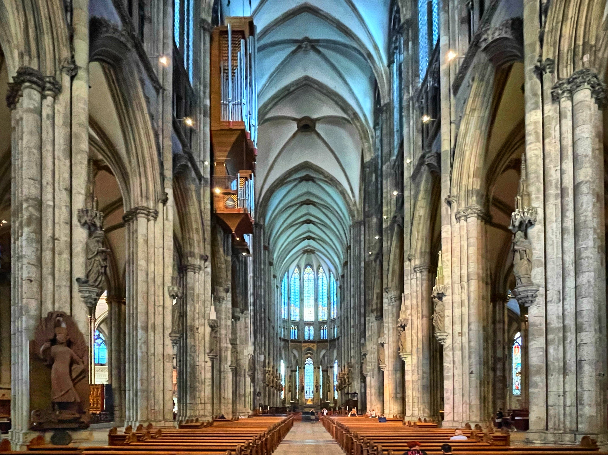
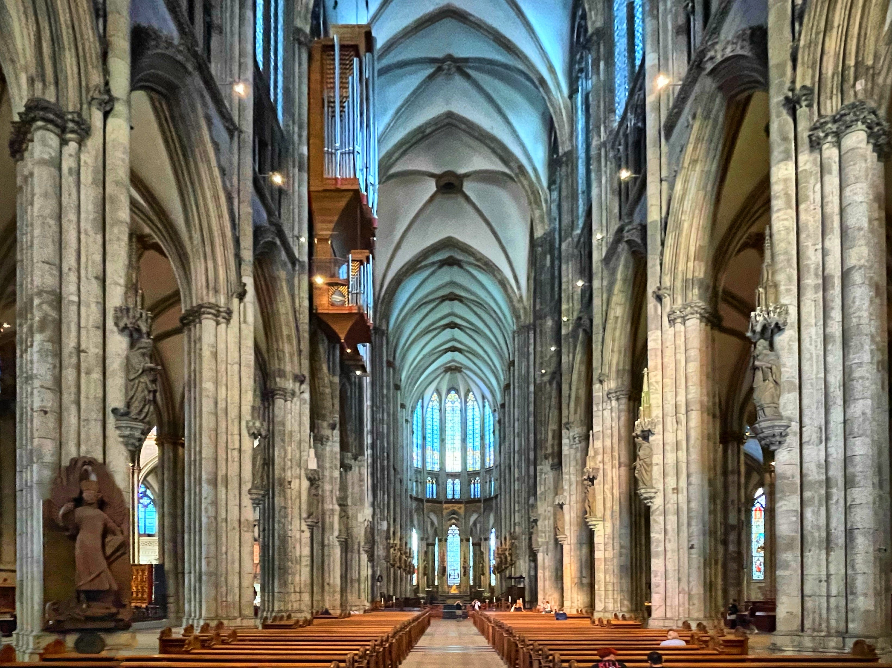
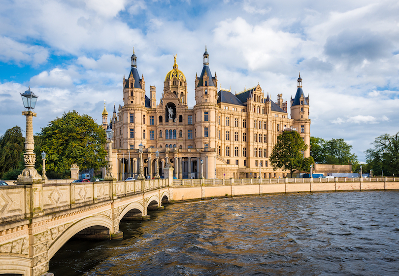

Located on an island in the city’s lake and surrounded by a beautiful park, it has a rich history that dates back to the 9th century. Over the years, it served as a residence for several dukes and grand dukes of Mecklenburg-Schwerin for many generations.
The present building was constructed in the 19th century and showcases a mix of Gothic and Renaissance styles. Its design incorporates towers, turrets, and decorative elements that give the castle its distinctive character.
Schwerin Castle is a symbol of the city’s rich cultural heritage. Visitors to the castle can admire its beautiful architecture. They can also explore its interior and learn about its rich history through exhibits and displays. The castle’s beautiful gardens and parks also provide a tranquil space for visitors to relax."
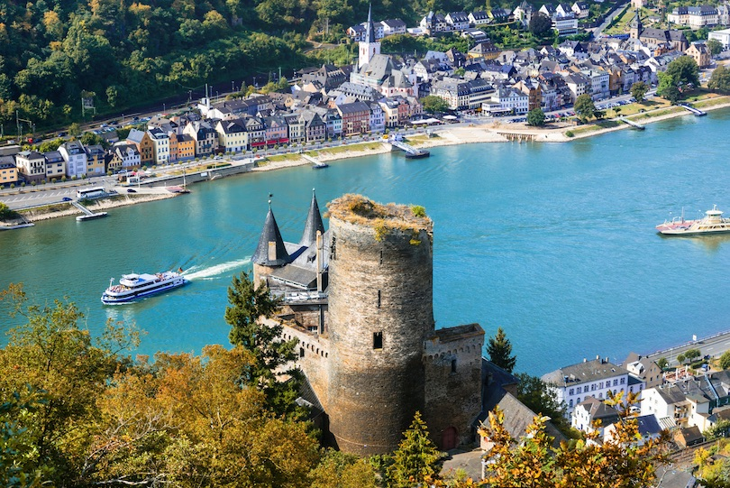 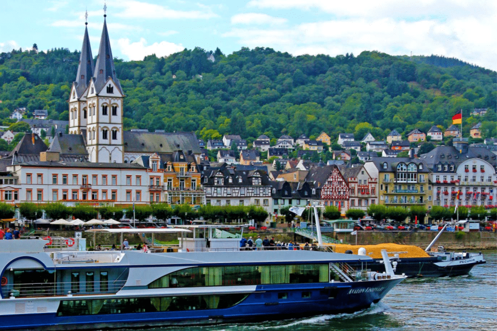
This section of the river extends from Bingen to Koblenz. It carves its way here through steep vineyard-covered hills topped with countless castles and ruins.
The river has been an important trade route into central Europe since ancient times and a string of small towns has grown up along the banks. Constrained in size, many of these old towns retain a historic feel today.
Additionally, the Romantic Rhine is famous for its scenic boat rides. These offer a fabulous way to immerse yourself in the region’s natural beauty.
UNITED KINGDOM
 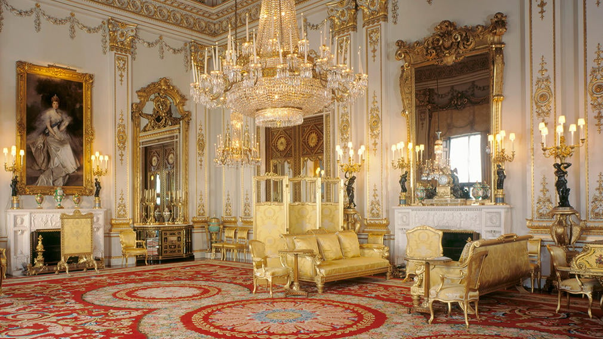
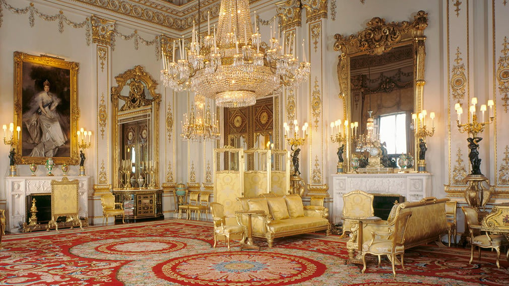
Originally known as Buckingham House, the building at the core of today's palace was a large townhouse built for the Duke of Buckingham in 1703 on a site that had been in private ownership for at least 150 years. It was acquired by King George III in 1761 as a private residence for Queen Charlotte and became known as The Queen's House. During the 19th century it was enlarged by architects John Nash and Edward Blore, who constructed three wings around a central courtyard. Buckingham Palace became the London residence of the British monarch on the accession of Queen Victoria in 1837.
The last major structural additions were made in the late 19th and early 20th centuries, including the East Front, which contains the well-known balcony on which the royal family traditionally appears to greet crowds. A German bomb destroyed the palace chapel during the Second World War; the Queen's Gallery was built on the site and opened to the public in 1962 to exhibit works of art from the Royal Collection.
The original early-19th-century interior designs, many of which survive, include widespread use of brightly coloured scagliola and blue and pink lapis, on the advice of Charles Long. King Edward VII oversaw a partial redecoration in a Belle Époque cream and gold colour scheme. Many smaller reception rooms are furnished in the Chinese regency style with furniture and fittings brought from the Royal Pavilion at Brighton and from Carlton House. The palace has 775 rooms, and the garden is the largest private garden in London. The state rooms, used for official and state entertaining, are open to the public each year for most of August and September and on some days in winter and spring.
 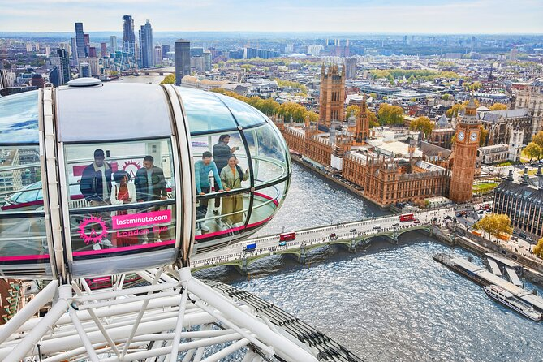
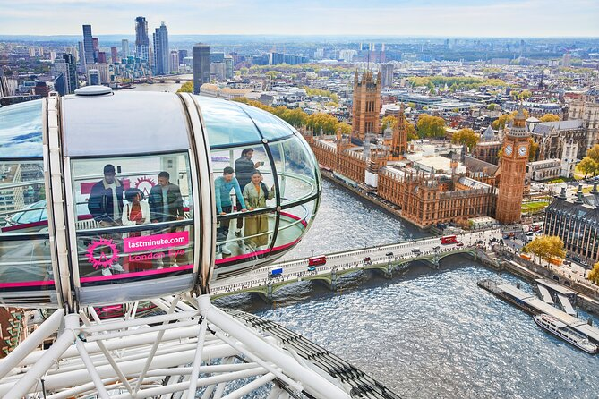


While most famous for the magnificent 2,000-year-old Roman Baths built around the city's rejuvenating hot springs, it's equally well known for its honey-colored Georgian Townhouses, such as those located on Royal Crescent. One of them, #1 Royal Crescent, is open to the public and offers a fascinating look at life in Bath during the Georgian period. Some 500 of the city's buildings are considered of historical or architectural importance, a fact that has resulted in the entire city being granted World Heritage status.
Among the most interesting to visit today are the Holborne Museum with its large collections of artworks, silver, and period furniture; the famous Assembly Rooms, star of countless period dramas on TV and home to the interesting Fashion Museum; and the Jane Austen Centre and its neighbor Mary Shelley's House of Frankenstein, which tell the stories of two of Bath's most famous residents.
Bath also makes an ideal location from which to explore some of England's most stunning countryside, including the Avon Valley, the Mendip Hills, the Cotswolds, and countless other fantastic Somerset landmarks.